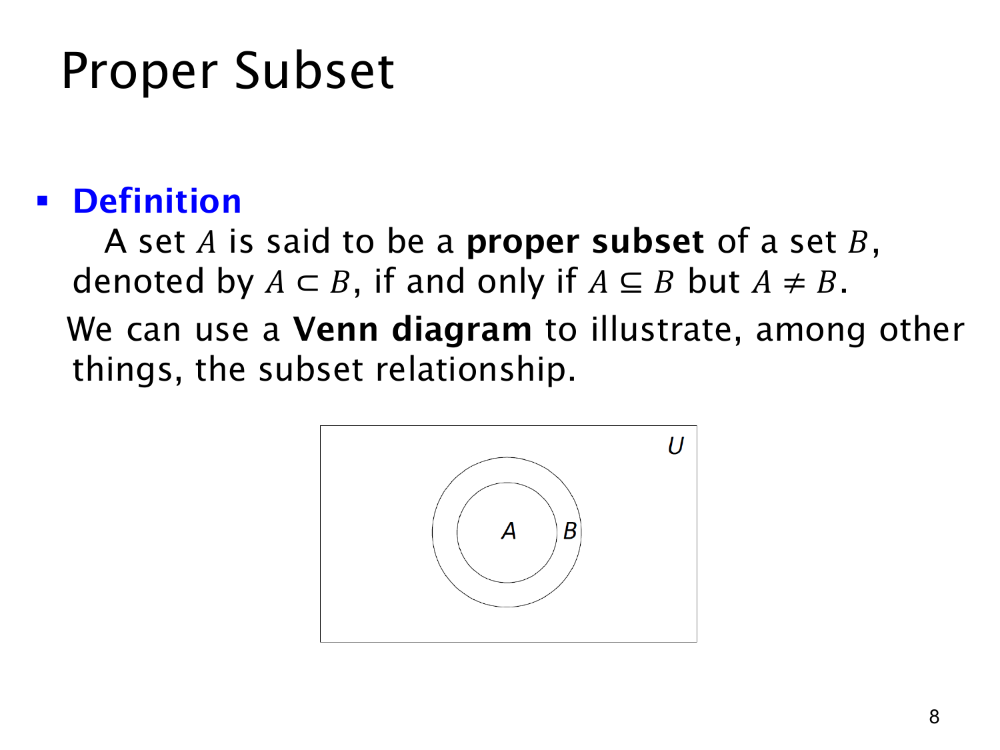

L1.4 · 第 8 页讲解原文
查看这一页课件

真子集与文氏图
集合 A 是集合 B 的真子集（proper subset），本课记作 A⊂B，条件是
A⊂B⟺A⊆B ∧ A=B.
也就是说，A 的元素都在 B 中，并且 B 至少还有一个不在 A 中的元素。例如 {1,2}⊂{1,2,3}；但 {1,2}⊂{1,2}，因为两边相等。与上一页的 ⊆ 比较，差别正是“是否允许相等”。
原页下方的文氏图（Venn diagram）画了一个矩形 U，其中的大圆是 B，小圆是 A。小圆完全位于大圆内，直观表示 A 的每个元素都在 B 中；大圆还留有小圆以外的区域，表示 B 可以含有 A 没有的元素。矩形 U 表示本图讨论的全集或论域，两个集合都画在其中。
图形是理解关系的辅助，正式判断仍要检查成员条件。对真子集尤其需要找到或保证一个 b∈B 且 b∈/A；只画一个小圈在大圈里面，而没有明确成员关系时，不应把画法当成独立证明。不同教材有时对 ⊂ 的用法不一致；本课已明确把它定义为真包含，应按此约定使用。